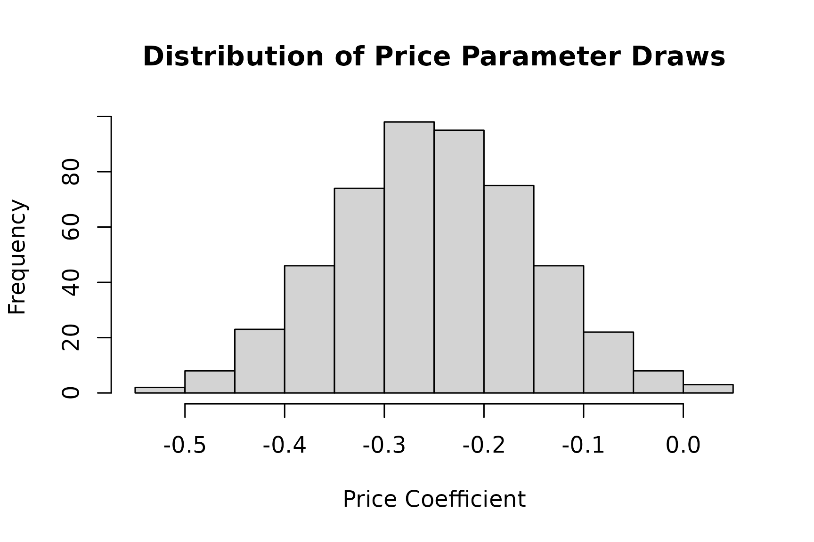

Prior specifications define your assumptions about respondent
preferences before collecting data. These priors serve two key purposes
in cbcTools: optimizing experimental designs (for
D-optimal methods) and simulating choices. This article shows how to
create and work with prior specifications using
cbc_priors().
What Are Priors?
Priors represent your beliefs about how attributes influence respondent choices before collecting data. They specify:
- Direction of effects: Positive values increase utility, negative values decrease it.
- Magnitude of effects: Larger absolute values indicate stronger preferences.
- Heterogeneity in effects: Random parameters can be used to specify heterogeneity in preferences across the population.
Sources of Prior Information
- Literature review: Published studies in similar contexts.
- Expert judgment: Domain knowledge from researchers or practitioners.
- Pilot studies: Small preliminary studies to estimate effects.
- Previous studies: Your own past research in related areas.
- Theoretical expectations: Economic theory or behavioral assumptions.
Basic Prior Specification
For the purposes of this article, we’ll keep working with the same set of profiles about apples:
library(cbcTools)
profiles <- cbc_profiles(
price = c(1, 1.5, 2, 2.5, 3),
type = c('Fuji', 'Gala', 'Honeycrisp'),
freshness = c('Poor', 'Average', 'Excellent')
)
profiles
#> CBC Profiles
#> ============
#> price : Continuous (5 levels, range: 1.00-3.00)
#> type : Categorical (3 levels: Fuji, Gala, Honeycrisp)
#> freshness : Categorical (3 levels: Poor, Average, Excellent)
#>
#> Profiles: 45
#> First few rows:
#> profileID price type freshness
#> 1 1 1.0 Fuji Poor
#> 2 2 1.5 Fuji Poor
#> 3 3 2.0 Fuji Poor
#> 4 4 2.5 Fuji Poor
#> 5 5 3.0 Fuji Poor
#> 6 6 1.0 Gala Poor
#> ... and 39 more rowsFixed Parameters
Fixed parameters assume you know the exact coefficient values. Start with the simplest case:
# Basic fixed priors
priors_fixed <- cbc_priors(
profiles = profiles,
price = -0.25, # Negative = prefer lower prices
type = c(0.5, 1.0), # Preferences relative to reference level
freshness = c(0.6, 1.2) # Preferences relative to reference level
)
priors_fixed
#> CBC Prior Specifications:
#>
#> price:
#> Continuous variable
#> Levels: 1, 1.5, 2, 2.5, 3
#> Fixed parameter
#> Coefficient: -0.25
#>
#> type:
#> Categorical variable
#> Levels: Fuji, Gala, Honeycrisp
#> Reference level: Fuji
#> Fixed parameter
#> Gala: 0.5
#> Honeycrisp: 1
#>
#> freshness:
#> Categorical variable
#> Levels: Poor, Average, Excellent
#> Reference level: Poor
#> Fixed parameter
#> Average: 0.6
#> Excellent: 1.2Understanding Categorical Variables
For categorical attributes, the reference level is set by the
first level defined in cbc_profiles(), which in
this case is "Fuji" for Type and
"Poor" for Freshness. This would imply the
following for the above set of priors:
Type:
- Fuji: coefficient = 0 (Reference level)
- Gala: coefficient = 0.5 (preferred over Fuji)
- Honeycrisp: coefficient = 1.0 (most preferred)
Freshness:
- Poor: coefficient = 0 (Reference level)
- Average: coefficient = 0.6
- Excellent: coefficient = 1.2
Using Named Specifications
You can specify the levels for categorical priors using names:
priors_named <- cbc_priors(
profiles = profiles,
price = -0.25,
type = c("Gala" = 0.5, "Honeycrisp" = 1.0),
freshness = c("Average" = 0.6, "Excellent" = 1.2)
)This produces the same set of priors as the priors_fixed
example above:
identical(priors_fixed$pars, priors_named$pars)
#> [1] TRUERandom Parameters
Random parameters allow for preference heterogeneity across
respondents. Use rand_spec() to define random parameters.
In the example below, we use "n" to specify normal
distributions for the price and freshness
attributes. Note that for freshness the mean
and sd are vectors since it is a categorical attribute with
three levels (the first level is the reference level):
priors_random <- cbc_priors(
profiles = profiles,
price = rand_spec(
dist = "n",
mean = -0.25,
sd = 0.1
),
type = c(0.5, 1.0),
freshness = rand_spec(
dist = "n",
mean = c(0.6, 1.2),
sd = c(0.1, 0.1)
)
)
priors_random
#> CBC Prior Specifications:
#>
#> price:
#> Continuous variable
#> Levels: 1, 1.5, 2, 2.5, 3
#> Random - Normal distribution
#> Mean: -0.25
#> SD: 0.1
#>
#> type:
#> Categorical variable
#> Levels: Fuji, Gala, Honeycrisp
#> Reference level: Fuji
#> Fixed parameter
#> Gala: 0.5
#> Honeycrisp: 1
#>
#> freshness:
#> Categorical variable
#> Levels: Poor, Average, Excellent
#> Reference level: Poor
#> Random - Normal distribution
#> Average:
#> Mean: 0.6
#> SD: 0.1
#> Excellent:
#> Mean: 1.2
#> SD: 0.1
#>
#> Correlation Matrix:
#> price freshnessAverage freshnessExcellent
#> price 1 0 0
#> freshnessAverage 0 1 0
#> freshnessExcellent 0 0 1Three distributions are supported:
-
"n": normal -
"ln": log-normal (forces positivity) -
"cn": censored normal (forces positivity)
Parameter Correlations
Model correlations between random parameters can be included using
cor_spec():
priors_correlated <- cbc_priors(
profiles = profiles,
price = rand_spec(
dist = "n",
mean = -0.1,
sd = 0.05,
correlations = list(
cor_spec(
with = "type",
with_level = "Honeycrisp",
value = 0.3
)
)
),
type = rand_spec(
dist = "n",
mean = c("Gala" = 0.1, "Honeycrisp" = 0.2),
sd = c("Gala" = 0.05, "Honeycrisp" = 0.1)
),
freshness = c(0.1, 0.2)
)
# View the correlation matrix
priors_correlated$correlation
#> price typeGala typeHoneycrisp
#> price 1.0 0 0.3
#> typeGala 0.0 1 0.0
#> typeHoneycrisp 0.3 0 1.0Types of Correlations
General correlation between all levels of two attributes:
cor_spec(
with = "type",
value = -0.2
)Correlation with a specific level of a categorical attribute:
cor_spec(
with = "type",
with_level = "Honeycrisp",
value = 0.3
)Correlation from a specific level to another specific level:
cor_spec(
with = "freshness",
level = "Gala",
with_level = "Excellent",
value = 0.4
)Interaction Effects
You can include interaction terms in your priors using
int_spec():
# Create priors with interaction effects
priors_interactions <- cbc_priors(
profiles = profiles,
price = -0.25,
type = c("Fuji" = 0.5, "Honeycrisp" = 1.0),
freshness = c("Average" = 0.6, "Excellent" = 1.2),
interactions = list(
# Price sensitivity varies by apple type
int_spec(
between = c("price", "type"),
with_level = "Fuji",
value = 0.1
),
int_spec(
between = c("price", "type"),
with_level = "Honeycrisp",
value = 0.2
),
# Type preferences vary by freshness
int_spec(
between = c("type", "freshness"),
level = "Honeycrisp",
with_level = "Excellent",
value = 0.3
)
)
)
priors_interactions
#> CBC Prior Specifications:
#>
#> price:
#> Continuous variable
#> Levels: 1, 1.5, 2, 2.5, 3
#> Fixed parameter
#> Coefficient: -0.25
#>
#> type:
#> Categorical variable
#> Levels: Fuji, Gala, Honeycrisp
#> Reference level: Gala
#> Fixed parameter
#> Fuji: 0.5
#> Honeycrisp: 1
#>
#> freshness:
#> Categorical variable
#> Levels: Poor, Average, Excellent
#> Reference level: Poor
#> Fixed parameter
#> Average: 0.6
#> Excellent: 1.2
#>
#> Interactions:
#> price × type[Fuji]: 0.1
#> price × type[Honeycrisp]: 0.2
#> type[Honeycrisp] × freshness[Excellent]: 0.3No-Choice Priors
For designs with no-choice options, specify the no-choice utility
with the no_choice argument:
# Fixed no-choice prior
priors_nochoice_fixed <- cbc_priors(
profiles = profiles,
price = -0.25,
type = c(0.5, 1.0),
freshness = c(0.6, 1.2),
no_choice = -0.5 # Negative values make no-choice less attractive
)
# Random no-choice prior
priors_nochoice_random <- cbc_priors(
profiles = profiles,
price = -0.25,
type = c(0.5, 1.0),
freshness = c(0.6, 1.2),
no_choice = rand_spec(dist = "n", mean = -0.5, sd = 0.2)
)
priors_nochoice_fixed
#> CBC Prior Specifications:
#>
#> price:
#> Continuous variable
#> Levels: 1, 1.5, 2, 2.5, 3
#> Fixed parameter
#> Coefficient: -0.25
#>
#> type:
#> Categorical variable
#> Levels: Fuji, Gala, Honeycrisp
#> Reference level: Fuji
#> Fixed parameter
#> Gala: 0.5
#> Honeycrisp: 1
#>
#> freshness:
#> Categorical variable
#> Levels: Poor, Average, Excellent
#> Reference level: Poor
#> Fixed parameter
#> Average: 0.6
#> Excellent: 1.2
#>
#> no_choice:
#> Continuous variable
#> Fixed parameter
#> Coefficient: -0.5Parameter Draws for Bayesian Analysis
When you specify random parameters, cbc_priors()
automatically generates parameter draws for Bayesian D-error
calculation. You can conrol both the draw type with the
draw_type argument ("halton" or
"sobol") and the number of draws with the
n_draws argument, e.g.:
priors_bayesian <- cbc_priors(
profiles = profiles,
price = rand_spec(
dist = "n",
mean = -0.25,
sd = 0.1
),
type = rand_spec(
dist = "n",
mean = c(0.5, 1.0),
sd = c(0.1, 0.2)
),
freshness = c(0.6, 1.2),
n_draws = 500, # Default = 100
draw_type = "sobol" # Default = "halton"
)
# Inspect the parameter draws
price_draws <- priors_bayesian$par_draws[, 1]
cat("Parameter draws dimensions:", dim(priors_bayesian$par_draws), "\n")
#> Parameter draws dimensions: 500 5
cat("Mean of price draws:", mean(price_draws), "\n")
#> Mean of price draws: -0.2496651
cat("SD of price draws:", sd(price_draws), "\n")
#> SD of price draws: 0.09856398
# Plot distribution of one parameter
hist(
price_draws,
main = "Distribution of Price Parameter Draws",
xlab = "Price Coefficient"
)
Common Pitfalls
Mismatched Scales
Ensure prior magnitudes match your attribute scales:
# Problem: Price in dollars, prior assumes price in cents
profiles_dollars <- cbc_profiles(price = c(1.00, 2.00, 3.00), ...)
priors_cents <- cbc_priors(profiles_dollars, price = -10, ...) # Too large!
# Solution: Match scales
priors_dollars <- cbc_priors(profiles_dollars, price = -0.10, ...) # AppropriateWrong Reference Levels
Remember the first level is always the reference:
# If you want "Excellent" as reference, reorder profiles
profiles_reordered <- cbc_profiles(
price = c(1, 1.5, 2, 2.5, 3),
type = c('Fuji', 'Gala', 'Honeycrisp'),
freshness = c('Excellent', 'Average', 'Poor') # Excellent now reference
)
priors_reordered <- cbc_priors(
profiles_reordered,
price = -0.1,
type = c(0.1, 0.2),
freshness = c(-0.1, -0.2) # Negative = worse than excellent
)Incompatible Restrictions
Ensure your priors are compatible with restricted profiles:
# If you've restricted certain profile combinations,
# make sure your priors don't assume those combinations are common
restricted_profiles <- cbc_restrict(
profiles,
type == "Fuji" & price > 2.5
)
# Prior should reflect that expensive Fuji combinations don't exist
priors_compatible <- cbc_priors(restricted_profiles, ...)Using Priors in Practice
Once created, priors are used in:
-
Design optimization: Pass to
cbc_design()for D-optimal methods. See the Generating Designs article for more details. -
Choice simulation: Pass to
cbc_choices()for realistic choice patterns. See the Simulating Choices article for more details.